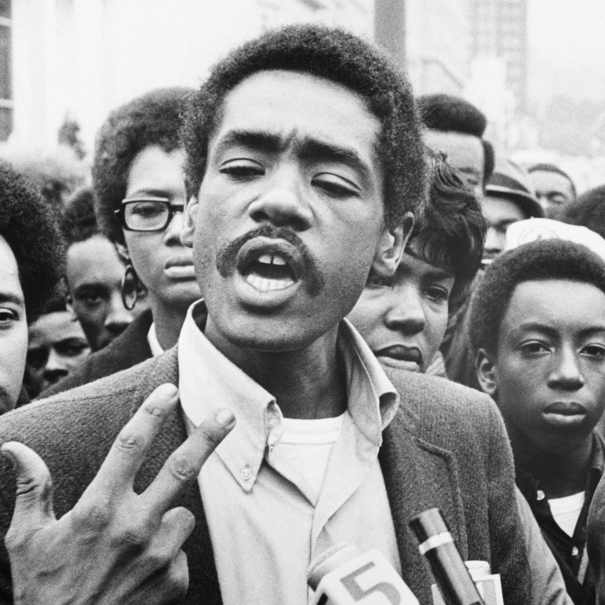
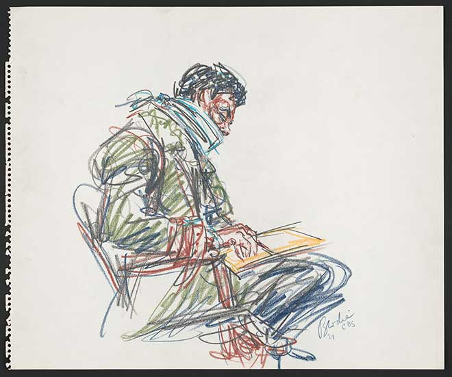

The Chicago Seven was originally the Chicago Eight. However, Bobby Seale, who made the Chicago Seven Eight, was not in relation with any of the other men on trial. Some he had not talked to, and some he had never even seen.
A founder and chair of the Black Panther Party, Seale was a civil rights activist and was against the war in Vietnam. Seale was charged many times before this trial, but many believed he was being tried as a member of the Chicago Eight because of his color.
In court, Seale was treated inhumanely. Although he was tried along with seven other men who all had the same attorney, William Kunstler, Bobby Seale had no attorney. Because of his obvious disadvantage, Seale repeatedly interrupted the court. Judge Hoffman ordered that Seale be bound to his chair and gagged.
Seale's charged were dropped near the end of the trial. Seale is still alive today, and used to teach African American Studies classes at Temple University.
"Bobby Seale had not participated in the advance planning for the demonstration, but was arrested and tried with the MOBE members. A co-founder of the Black Panthers, Seale had gone to Chicago as a last-minute replacement for Eldridge Cleaver. Seale, whose lawyer was unavailable due to hospitalization, was denied both a continuance and self-representation. Seale verbally lashed out, interrupting the proceedings. On October 29, 1969, in an extraordinary move, Judge Julius Hoffman ordered Bobby Seale bound and gagged. His trial was severed from the Chicago Eight on November 5, 1969. Finding him in contempt, Hoffman sentenced Seale to four years in prison, appealed at, U.S. v. Seale, 461 F.2d 345 (1972). As he was led from the courtroom, spectators shouted 'Free Bobby!'"
Library of Congress